Vamos a empezar viendo el funcionamiento de su mecánica fundamental y los elementos del videojuego Pong en Scratch, veremos sus características más destacables, como podemos diseñar sus elementos y crear tu propia versión del videojuego.
También pondremos en práctica tus conocimientos para encontrar errores de funcionamiento en el videojuego y finalmente aprenderemos a realizarle algunas modificaciones.
¡Adelante con él!
Cómo funciona el videojuego Pong
Recuerda que ya exploramos el funcionamiento del videojuego Pong, en la página 3. Explorando los videojuegos, ahora vamos a analizar su funcionamiento para la versión de un jugador.
Funcionamiento de la mecánica fundamental
El videojuego consiste en hacer rebotar una bola sobre una pala, con el objetivo de evitar que toque la parte inferior de la pantalla. La jugadora o jugador mueve la pala situada en la parte inferior de la pantalla. La bola rebota en los bordes de la pantalla de una forma determinada o aleatoria.
El nombre "Pong" proviene del sonido que hace la bola cuando es golpeada por la pala (ping) y rebota en la mesa (pong).
Vamos a ver con detalle el funcionamiento de la siguiente versión del videojuego Pong. NOTA: La paleta se mueve con el ratón.
Para que comprendas en profundidad el funcionamiento del videojuego Pong es importante que conozcas cada uno de las elementos del juego.
Elementos
A continuación, una vez visto el funcionamiento, vamos a identificar los elementos del videojuego Pong.
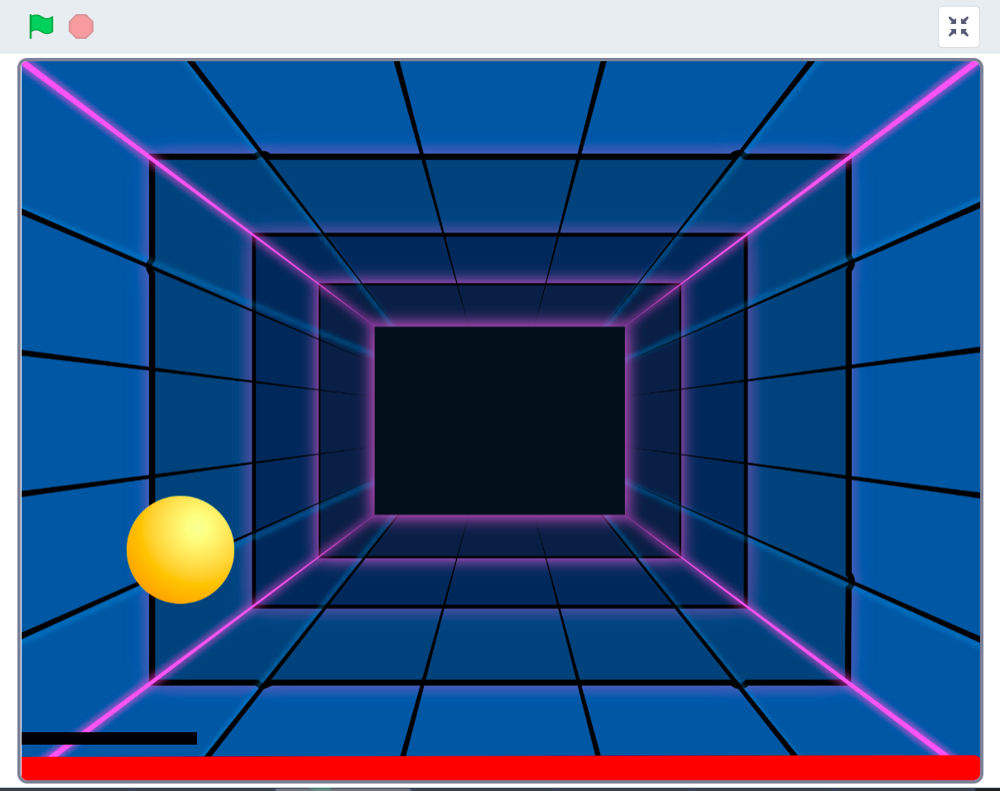
En el siguiente esquema descomponemos el videojuego en cada uno de sus elementos.

La línea roja de la parte inferior de la pantalla, la podemos crear como un objeto, o también como una línea pintada sobre el fondo con la herramienta pinta. El fondo y la bola los podemos obtener de la galería de Scratch. Para la pala se puede usar también la herramienta pinta.
Dinámicas
Aunque el videojuego lo componen cuatro elementos, sólo tres de ellos interactúan en las distintas acciones del juego.
En el siguiente esquema puedes ver el resultado de añadir las distintas acciones a cada uno de los elementos en la descomposición del videojuego Pong.

A continuación te explicamos con detalle cada una de las cuatro principales dinámicas del juego Pong y una posible programación de cada una de ellas.
Rebote de la bola en los bordes
Esta dinámica define el comportamiento de la bola al rebotar con los bordes de la pantalla.
Por ejemplo, vamos a definir la posición inicial de la bola, el ángulo inicial de movimiento y la velocidad de la bola en el juego.
- Con un ángulo de movimiento inicial de 45 grados.
- Y siempre con una velocidad de 9 pasos.
- Rebotando si toca un borde del fondo de la pista.
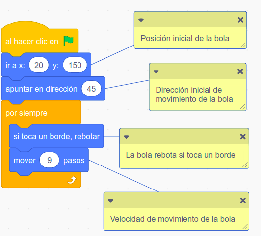
Movimiento de la pala
Podemos controlar el movimiento de la pala por ejemplo con el puntero del ratón.
- Debemos programar la pala para que se mueva, al hacer clic en la bandera verde.
- Por siempre, dar a x el valor "posición x del ratón" del ordenador.
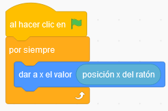
Rebote de la bola en la pala
La bola debe rebotar en la pala con diferentes direcciones, dependiendo de la zona en la que impacte la pelota. Se puede establecer un ángulo de rebote fijo para que rebote siempre en la misma dirección, o bien, un comportamiento aleatorio de forma que cada rebote sea diferente.
- Si ¿tocando la pala? entonces.
- Gira un "número aleatorio entre 160 y 200 grados.
- Se mueve la bola a una velocidad de 9 pasos.
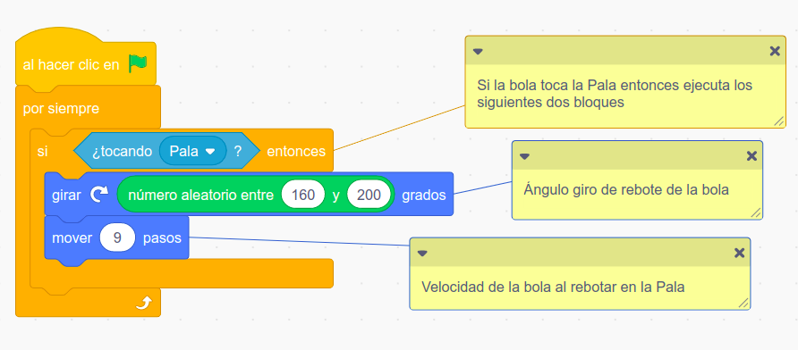
Fin del juego
Cuando la bola toque la línea roja será el fin del juego.
La línea roja se puede crear en Scratch como un objeto, o bien, dibujarse sobre el fondo del escenario con la herramienta pinta.
- Al hacer clic en bandera verde.
- Si la pelota toca el color rojo situado debajo de la pala, el videojuego se detendrá, se detendrán todos los programas, terminando la partida.
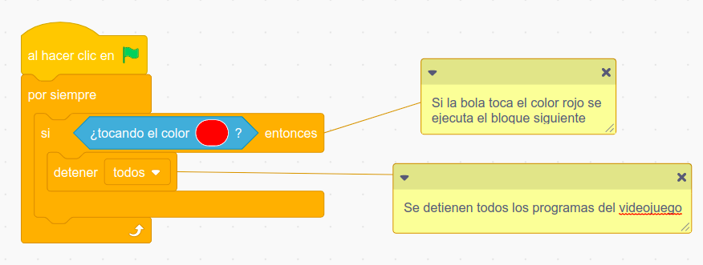
Comprueba tu conocimiento sobre el Pong
Haciendo debugging con el videojuego Pong
Ha llegado el momento de comprobar tus conocimientos sobre el funcionamiento del videojuego Pong en su versión para un jugador con Scratch.
En esta actividad, vamos a trabajar en pareja, te presento una versión del videojuego Pong con bugs, debes identificar qué anda mal y encontrar una solución para ellos.
- En este programa, la bola debería rebotar cada vez que toca la pala, pero algo no está funcionando porque no lo hace. ¿Cómo podemos reparar este programa?
- La partida del videojuego debería finalizar cuando la bola toca la línea roja inferior de la pantalla pero esto no pasa. ¿Cómo podemos reparar este programa?
Escribe tu solución en tu cuaderno y utiliza la función reinventar de Scratch, para reparar los bugs y guardar el videojuego con tus soluciones.
Reflexiona y pon en común con tus compañeros de clase tus experiencias de prueba y debuggins.
Lumen dice ¿Necesitas ayuda con esta actividad?
Si tienes dudas para realizar esta actividad no te preocupes, es algo que puede pasar, repasa el punto uno de esta página para que comprendas mejor el funcionamiento de este videojuego.
Pantalla de inicio del videojuego
El videojuego debe tener una pantalla de inicio con una cuenta atrás para empezar el juego. ¿Cómo la harías con Scratch? Te ayudo:
- Primero haz un boceto de dichas pantallas en tu cuaderno.
- A continuación, píntalas con la herramienta Pinta de Scratch.
- Por último, prográmala para que siempre se visualicen sólo al iniciar el juego.
Para crear una pantalla de inicio que sirva de presentación del videojuego con una cuenta atrás para empezar puedes inspirarte en este ejemplo.
Lo más sencillo es que diseñes cuatro fondos, tres que contengan sólo los números de la cuenta atrás (3,2,1) y el cuarto que será la pista de juego.
Recuerda programar ir cambiando de fondo cada segundo, sólo al inicio del videojuego.
Otra opción más compleja es crear una portada con un menú de inicio. Aquí te dejo un tutorial de esta segunda opción.
¡Ánimo, seguro que lo haces bien!
Crea tu propio videojuego Pong
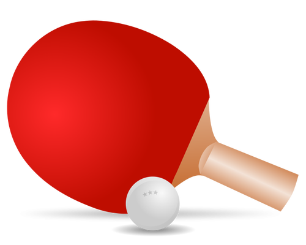
Si quieres crear tu propio videojuego Pong en su versión para un jugador con Scratch, sólo debes seguir el siguiente proceso: abre un proyecto nuevo en Scratch y crea todos los elementos del videojuego Pong.
Para empezar a crear el videojuego, recuerda que los nuevos proyectos de Scratch comienzan con un fondo blanco y un gato. Pero puedes borrarlo y personalizarlo todo. Pinta un fondo que represente la pista de juego.
Además, necesitamos diseñar al menos dos objetos, una pelota y una pala, además del fondo, antes de pasar a programar el videojuego Pong.
Abre el programa Scratch.mit.edu y pulsa sobre el botón "Iniciar sesión" introduce tu usuario y contraseña.
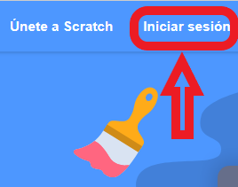
Veras la siguiente pantalla.
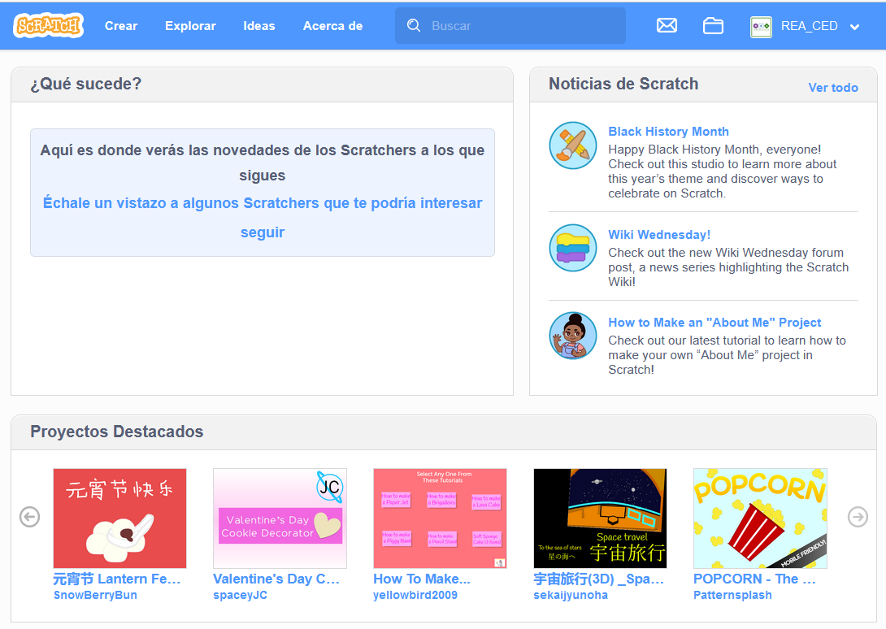
Te ayudo con los elementos del juego:
Crea un nuevo proyecto
Pulsamos sobre el usuario si se cuenta con un registro previo o accedemos directamente al menú Crear y eliminamos el objeto Gato que nos aparece por defecto en Scratch.
Diseñamos la Pala
Recurrimos a la herramienta pintar, para diseñar la Pala sobre la que rebotará la bola.
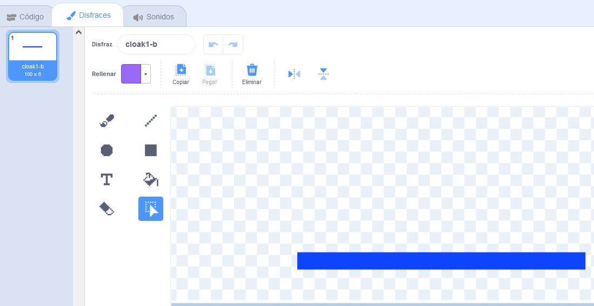
Diseña la bola
Podemos elegir una bola de las disponibles en la galería de Scratch o iremos a la herramienta Pinta que vimos en el tema anterior, para diseñar la bola que debe rebotar en las paredes del fondo y en la pala.
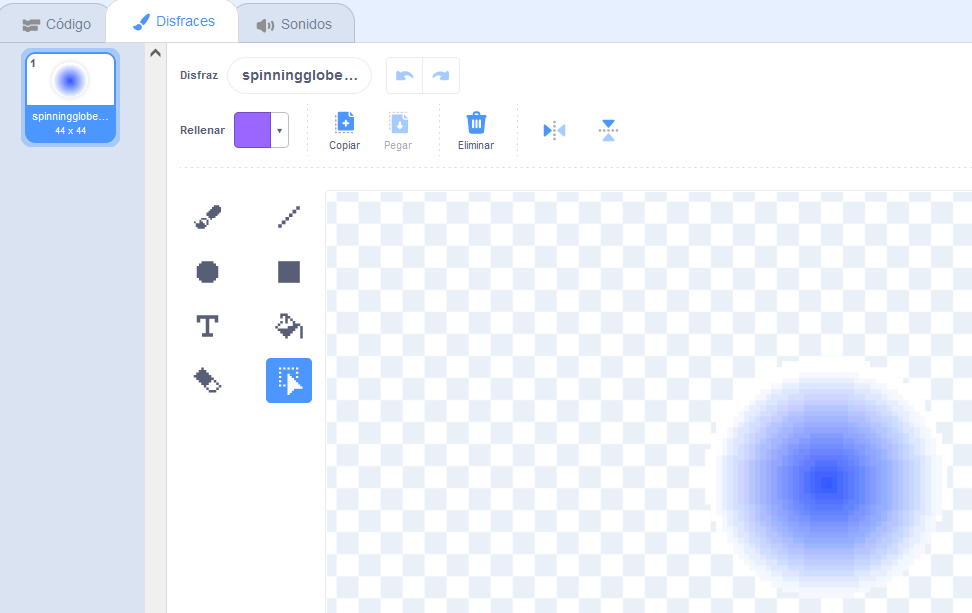
Diseña la pista
El fondo del juego que será la pantalla principal o pista de juego lo podemos elegir de la galería de Scratch o lo podemos diseñar con la herramienta Pinta.
Es muy importante que dicho fondo no contenga el mismo color que la línea de Fin de juego debajo de la paleta, porque ya sabes que el juego se detendrá cuando la pelota toque ese color.
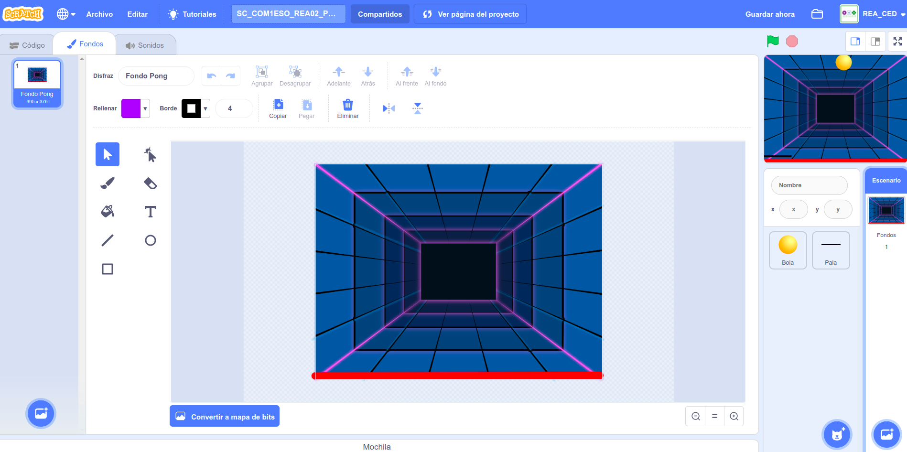
Para seleccionar los bloques de programación del videojuego Pong en Scratch, realizar los siguientes pasos recogidos en las Tarjetas de juego Pong.
Y si te atreves a realizar el videojuego Pong en su versión para dos jugadores con Scratch.
Puedes intentar crear la versión para dos jugadores de este videojuego en Scratch. Te puedes inspirar en el siguiente.